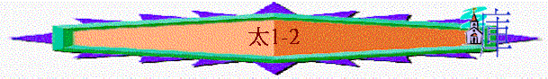

|
天 國 君 王 |
||||||||||
|
出生 |
初露 |
事工 |
被棄 |
憐恤 |
培訓 |
對答 |
責備 |
忍受 |
復活 |
吩咐 |
|
1-2 |
3-4 |
5-10 |
11-13 |
14-15 |
16-18 |
19-22 |
23-25 |
26-27 |
28 |
|
Ⅰ緒論
一.作者：馬太
「耶穌經過的時候，看見亞勒腓的兒子利未坐在稅關上，就對他說：「你跟從我來。」他就起來，跟從了耶穌。」可2:14
「耶穌從那裡往前走，看見一個人名叫馬太，坐在稅關上，就對他說：「你跟從我來。」他就起來跟從了耶穌。」太9:9
～原名叫利未(意聯合)，未歸主前為稅吏，替外邦人收稅，為猶太人所憎惡
～主呼召他時立即放下工作，成為十二使徒中的一位，而改名為馬太，意思是神的恩賜及禮物
二.時間
～馬太寫書時間，一定早於主70年，因書中所講關乎耶路撒冷城被毀之事(主後70年)，是以預言方式說的，可見當時尚未發生，一般學者認為成書約在主後60至70年間
三.對象
～應是猶太人，因為本書引用舊約經文是四卷福音書中最多的，約有93次，而有關猶太文化背景的述，也分外詳盡，在本書十三章中七個比喻裡，都涉及猶太農業、家庭、商業，並記載詳盡，而書中也時常題及「亞伯拉罕的後裔」「大衛的子孫」，所以有理由相信此書主要的對象是猶太人
四.目的
1.對猶太人來說：介紹確實的天國君王
「祭司長和我們的官府竟把他解去，定了死罪，釘在十字架上。」路24:20
「耶穌卻不言語。大祭司對他說：「我指著永生神叫你起誓告訴我們，你是神的兒子基督不是？」]耶穌對他說：「你說的是。然而，我告訴你們，後來你們要看見人子坐在那權能者的右邊，駕著天上的雲降臨。」大祭司就撕開衣服，說：「他說了僭妄的話，我們何必再用見證人呢？這僭妄的話，現在你們都聽見了。你們的意見如何？」他們回答說：「他是該死的。」」太26:63-66
～猶太人受羅馬管治，他們一直盼望舊約預言中的彌賽亞(受膏者)將來臨，在政治上救贖他們，復興重建以色列國度。
～但當耶穌表明自己是基督(即彌賽亞)，他們卻不信，也厭棄祂，所以本書作者引用很多舊約的經文「這是要應驗先知……的話」，來證實耶穌就是基督，就是他們應仰望及所盼望的天國君王
2.對文士、法利賽人、祭司來說：指出真正的天國子民
「你們這假冒為善的文士和法利賽人有禍了！因為你們走遍洋海陸地，勾引一個人入教，既入了教，卻使他作地獄之子，比你們還加倍。」太23:15
「我告訴你們，你們的義若不勝於文士和法利賽人的義，斷不能進天國。」太5:20
～昔日很多法利賽人、文士自以為有義，可以入天國，但馬太福音講出他們的假冒為善，能說不能行，真正天國的子民是從內心而引發有行動的義，而此義是超越世間的義的！
3.對猶太基督徒來說：說明真實的天國榮耀
「為義受逼迫的人有福了！因為天國是他們的。「人若因我辱罵你們，逼迫你們，捏造各樣壞話毀謗你們，你們就有福了！應當歡喜快樂，因為你們在天上的賞賜是大的。在你們以前的先知，人也是這樣逼迫他們。」」太5:10-12
「耶穌說：「我實在告訴你們，你們這跟從我的人，到復興的時候，人子坐在他榮耀的寶座上，你們也要坐在十二個寶座上，審判以色列十二個支派。凡為我的名撇下房屋，或是弟兄、姐妹、父親、母親、（有古卷加：妻子）兒女、田地的，必要得著百倍，並且承受永生。」太19:28-29
～當時的猶太人，若離開猶太教歸向基督，是叛教的行為，他們會受逼迫，甚至被家人厭棄，家業也被奪去，他們不禁會問「值得嗎？」本書帶出跟從主能得天國的榮耀(引用很多「天國」「賞賜」「為大」「寶座」等榮耀字眼)，是值得的！
五.主題與大綱
主題：天國君王
1. 奇妙的出生 (1-2)
2. 光芒的初露 (3-4)
3. 權能的事工 (5-10)
4. 反常的被棄 (11-13)
5. 不滅的憐恤 (14-15)
6. 榮耀的培訓 (16-18)
7. 智慧的對答 (19-22)
8. 公義的責備 (23-25)
9. 超凡的忍受 (26-27)
10.大能的復活 (28:1-15)
11.權柄的吩咐 (28:16-20)
六.分析
～本書主要目的是印證耶穌就是那位不可比的天國君王，祂是真正彌賽亞，如何印證？
1.大衛的子孫
「亞伯拉罕的後裔，大衛的子孫（後裔，子孫：原文作兒子；下同）耶穌基督的家譜：」太1:1
「「論到基督，你們的意見如何？他是誰的子孫呢？」他們回答說：「是大衛的子孫。」」太22:42
～本書多次題及主是大衛子孫，大衛是王，他的後裔也將會出一位永遠的王，而主就是大衛子孫，也是那永遠的君王！
2.舊約的印證
「這一切的事成就是要應驗主藉先知所說的話。」太1:22
「到了一座城，名叫拿撒勒，就住在那裡。這是要應驗先知所說，他將稱為拿撒勒人的話了。」太2:23
「這是要應驗先知以賽亞的話，說：他代替我們的軟弱，擔當我們的疾病。」太8:17
「這是要應驗先知的話，說：我要開口用比喻，把創世以來所隱藏的事發明出來。」太13:35
～耶穌由出生、成長至傳道，祂所作的事是有舊約聖經所印證的，舊約中心是指向基督，更引證祂是先知所講將來要來的王！
3.門徒的見證
「西門彼得回答說：「你是基督，是永生神的兒子。」」太16:16
4.王者的風範
A.有權柄
「因為他教訓他們，正像有權柄的人，不像他們的文士。」太7:29
「眾人看見都驚奇，就歸榮耀與神，因為他將這樣的權柄賜給人。」太9:8
B.有差遣
「耶穌差這十二個人去，吩咐他們說：「外邦人的路，你們不要走；撒瑪利亞人的城，你們不要進；」太10:5
「你想，我不能求我父現在為我差遣十二營多天使來嗎？」太26:53
C.有憐憫
「耶穌從那裡往前走，有兩個瞎子跟著他，喊叫說：「大衛的子孫，可憐我們吧！」」9:27
D.有公義
「耶穌在諸城中行了許多異能，那些城的人終不悔改，就在那時候責備他們，說：「哥拉汛哪，你有禍了！伯賽大啊，你有禍了！因為在你們中間所行的異能，若行在推羅、西頓，他們早已披麻蒙灰悔改了。」太11:20-21
E.有智慧
「耶穌說：「這樣，大衛被聖靈感動，怎麼還稱他為主，說：主對我主說：你坐在我的右邊，等我把你仇敵放在你的腳下。大衛既稱他為主，他怎麼又是大衛的子孫呢？」他們沒有一個人能回答一言。從那日以後，也沒有人敢再問他什麼。」太22:43-46
F.有榮耀
「過了六天，耶穌帶著彼得、雅各，和雅各的兄弟約翰，暗暗的上了高山，就在他們面前變了形像，臉面明亮如日頭，衣裳潔白如光。」太17:1-2
～一個王者應有的風範，主也有，甚致主能做一些王不能做的事----甘心成為僕人及被釘十字架，祂亦行上！
七.注意
1.本書不是所有事蹟是按時間次序而記下，作者為要突出「天國君王」的主題及有系統介紹這位君王，有些事蹟會不按次序放在一段中編下，另外有一些主生平的事蹟，作者亦沒有記下。
2.留意「天國」的意思，有時同我們今日所講「天堂」「新天新地」有出入，多數是指主再來時，實質在地上建立的新國度。
3.留意經文的應許及重點，有時是單對猶太人說，但有時卻對世人說的。
4.本書有很多比喻，不要太「靈意」解釋，留意主在上文下理中直接的解釋。
Ⅱ.內容
一.
奇妙的降世(1-2)
1.王者的譜系(1:1-17)
「亞伯拉罕的後裔，大衛的子孫（後裔，子孫：原文作兒子；下同）耶穌基督的家譜：」1:1
～猶太人一直相信彌賽亞是出自大衛王族譜系，馬太要証明耶穌乃是大衛子孫，祂的根源是有系可尋的。
A.亞作拉罕後裔--信實的應許(1:1-6)
「亞伯蘭年九十九歲的時候，耶和華向他顯現，對他說：「我是全能的神。你當在我面前作完全人，我就與你立約，使你的後裔極其繁多。」亞伯蘭俯伏在地；神又對他說：「我與你立約：你要作多國的父。從此以後，你的名不再叫亞伯蘭，要叫亞伯拉罕，因為我已立你作多國的父。」我必使你的後裔極其繁多；國度從你而立，君王從你而出。創17:1-6
～神曾與亞伯拉罕立約，應許他得福、得地，並且他的後裔必成君王，要成就這應許，重點不是人的可信，而是神的信實
a.超越人的局限
「亞伯拉罕生以撒；以撒生雅各；雅各生猶大和他的弟兄。」太1:2
「亞伯拉罕就俯伏在地喜笑，心裡說：「一百歲的人還能得孩子嗎？撒拉已經九十歲了，還能生養嗎？」」創17:17
「以撒因他妻子不生育，就為他祈求耶和華；耶和華應允他的祈求，他的妻子利百加就懷了孕。」創25:21
～君王從亞伯拉罕後裔出，亞伯拉罕必須有後裔，但人肉身有他限制，一百歲怎能生子，到後來以撒的妻也不能生育，但神的信實超越人的局限，使他們相繼得兒子
b.超越人的不義
「猶大從他瑪氏生法勒斯和謝拉；法勒斯生希斯崙；希斯崙生亞蘭。」太1:3
「猶大為長子珥娶妻，名叫他瑪。」創38:6
「猶大心裡說：「恐怕示拉也死，像他兩個哥哥一樣」，就對他兒婦他瑪說：「你去，在你父親家裡守寡，等我兒子示拉長大。」他瑪就回去，住在他父親家裡。」創38:11
「他瑪被拉出來的時候便打發人去見他公公，對他說：「這些東西是誰的，我就是從誰懷的孕。請你認一認，這印和帶子並杖都是誰的？」猶大承認說：「他比我更有義，因為我沒有將他給我的兒子示拉。」從此猶大不再與他同寢了。他瑪將要生產，不料他腹裡是一對雙生。到生產的時候，一個孩子伸出一隻手來；收生婆拿紅線拴在他手上，說：「這是頭生的。」隨後這孩子把手收回去，他哥哥生出來了；收生婆說：「你為什麼搶著來呢？」因此給他起名叫法勒斯。」創38:25-29
～在這家譜中題及「他瑪氏」女姓的名字，她本來是猶大長子之妻，後來長子死去，他成為二弟之妻，但二弟亦死去，猶大沒將另外一個兒子給他瑪氏，沒盡本分，延續後代，最後他瑪氏在巧妙中為猶大成孕，才延續了猶大之譜系，所以人有不義之處，但神仍是可信的，沒有甚麼事情可破壞祂應許之計劃。
c.超越種族的不同
「撒門從喇合氏生波阿斯；波阿斯從路得氏生俄備得；俄備得生耶西；耶西生大衛王。大衛從烏利亞的妻子生所羅門。」太1:5-6
「約書亞卻把妓女喇合與他父家，並他所有的，都救活了；因為他隱藏了約書亞所打發窺探耶利哥的使者，他就住在以色列中，直到今日。」書6:25
「後來拿俄米的丈夫以利米勒死了，剩下婦人和他兩個兒子。這兩個兒子娶了摩押女子為妻，一個名叫俄珥巴，一個名叫路得，在那裡住了約有十年。」得1:3-4
～喇合氏與路得也是外邦女子，但她們亦對以色列的神有信心，以神為她們投靠的神，神的應許也沒有因種族不同而不臨到她們所生的後裔上！
d.超越人的軟弱
「耶西生大衛王。大衛從烏利亞的妻子生所羅門。」太1:6
～聖經刻意題及大衛從「烏利亞的妻子」生所羅門，明顯烏利亞的妻子是屬烏利亞，但因大衛犯罪，軟弱，以致與拔示巴同房，生了所羅門，神可因人的軟弱，廢去祂的應許，但祂仍是可信的！
B.大衛的子孫--大能的保守(1:7-16)
「你壽數滿足、與你列祖同睡的時候，我必使你的後裔接續你的位；我也必堅定他的國。他必為我的名建造殿宇；我必堅定他的國位，直到永遠。我要作他的父，他要作我的子；他若犯了罪，我必用人的杖責打他，用人的鞭責罰他。但我的慈愛仍不離開他，像離開在你面前所廢棄的掃羅一樣。你的家和你的國必在我（原文作你）面前永遠堅立。你的國位也必堅定，直到永遠。」撒下7:12-17
「耶和華說：「日子將到，我要給大衛興起一個公義的苗裔；他必掌王權，行事有智慧，在地上施行公平和公義。」耶23:5
～神應許大衛後裔必永遠掌王權，將來有永遠的王管治以色列，但要成就這應許，在過程中會遇到很多變數及危險，使這應許不成就，但神有大能的保守。
a.絕後的危機
「所羅門生羅波安；羅波安生亞比雅；亞比雅生亞撒；亞撒生約沙法；約沙法生約蘭；約蘭生烏西亞。」1:7-8
「亞哈謝的母親亞他利雅見他兒子死了，就起來剿滅猶大王室。但王的女兒約示巴將亞哈謝的兒子約阿施從那被殺的王子中偷出來，把他和他的乳母都藏在臥房裡。約示巴是約蘭王的女兒，亞哈謝的妹子，祭司耶何耶大的妻。他收藏約阿施，躲避亞他利雅，免得被殺。約阿施和他們一同藏在神殿裡六年；亞他利雅篡了國位。」代下22:10-12
～北國以色列經常有謀朝奪位，殺皇室人員的情況出現，但很奇妙，南國得神大能保守，後裔可得延續，也能承繼王權，而最危險的一次，是亞哈謝的兒子，險些被亞他利雅所殺(太1
沒記烏西亞之後的亞哈謝、約阿施、亞瑪謝數代)，但神將他藏起來，化解絕後危機。
b.亡國的影響
「百姓被遷到巴比倫的時候，約西亞生耶哥尼雅和他的弟兄。」1:11
～南國猶大後來亡國，一個國家已沒有，可能出現王室被殺，再不能復國，後裔的血統被混雜，再不能延續王室血統及再難有王出現的危機，但神有大能的保守，至終基督也是大衛的後裔，祂也可成為真正的受膏者。
c.咒詛的化解
「論到猶大王約雅敬你要說，耶和華如此說：你燒了書卷，說：『你為什麼在其上寫著，說巴比倫王必要來毀滅這地，使這地上絕了人民牲畜呢？』所以耶和華論到猶大王約雅敬說：他後裔中必沒有人坐在大衛的寶座上；他的屍首必被拋棄，白日受炎熱，黑夜受寒霜。」耶36:29-30
「雅各生約瑟，就是馬利亞的丈夫。那稱為基督的耶穌是從馬利亞生的。」太1:16
～約雅敬燒毀神的書卷後，神發出咒詛，他的後裔必不得作王，約瑟為約雅敬的後裔，應不能掌主權，但神有祂奇妙的作為，耶穌從馬利亞而生(馬利亞的先祖是大衛的另一兒子拿單)，所以巧妙地逃避了這咒詛。
C. 基督的家譜--週詳的計劃(1:17)
「這樣，從亞伯拉罕到大衛共有十四代；從大衛到遷至巴比倫的時候也有十四代；從遷至巴比倫的時候到基督又有十四代。」太1:17
a.有祂時候
～經過約十四代又到十四代……基督終降生，若按人的計劃，這時間實在太長，但神非人，有祂的時候，祂可以用很久時間成就祂的計劃，人只管憑信等候。
b.用人成就
～神用每一代的人，成就基督降生救恩的計劃，祂不用天使、動物，卻用人，而在譜系中，有很多人都應不值祂用(例如瑪拿西)，但祂仍使用！
c.預先計劃
「我又要叫你和女人彼此為仇；你的後裔和女人的後裔也彼此為仇。女人的後裔要傷你的頭；你要傷他的腳跟。」創3:15
～早在創世記，神已預言「女人的後裔」會傷袉的頭，耶穌基督是從馬利亞而生的，所以祂也是女人的後裔，原來彌賽亞的來臨一早已在「太初」定下來！
2.奇妙的降生(1:18-2:18)
A.聖靈感孕
「耶穌基督降生的事記在下面：他母親馬利亞已經許配了約瑟，還沒有迎娶，馬利亞就從聖靈懷了孕。」太1:18
「天使回答說：「聖靈要臨到你身上，至高者的能力要蔭庇你，因此所要生的聖者必稱為神的兒子（或作：所要生的，必稱為聖，稱為神的兒子）。」路1:35
～人有他的罪性及不完美的地方，不完美的人所生的後裔也是不完美，從聖靈而出，非人而來，是神聖的，是完全的，是聖者，沒有罪的人才可為人代替罪。
B.名字超卓
「他將要生一個兒子，你要給他起名叫耶穌，因他要將自己的百姓從罪惡裡救出來。」這一切的事成就是要應驗主藉先知所說的話，說：「必有童女懷孕生子；人要稱他的名為以馬內利。」（以馬內利繙出來就是「神與我們同在」。）」1:21-23
～人類歷史中，有兩個問題是最難解決的，一是罪行，二是死亡。(此死亡不單指肉體死亡，也指靈性的死亡，與神分離，不能與聖潔的神同在。)
～但主的名字已顯出祂可以解決以上問題
a.名「耶穌」
～耶穌和約書亞的名字一樣，耶和華的幫助，此處更豐富了主名意思----祂要將自己的百姓後罪惡裏拯救出來，祂幫人解決罪的問題！
b.名「以馬內利」
～神與我們同在的意思，基督的降世，祂的救贖工作，使人與神和好，真正享受同在的快樂！
C.天象突變
「當希律王的時候，耶穌生在猶太的伯利恆。有幾個博士從東方來到耶路撒冷，說：「那生下來作猶太人之王的在那裡？我們在東方看見他的星，特來拜他。」」太2:1-2
「他們聽見王的話就去了。在東方所看見的那星忽然在他們前頭行，直行到小孩子的地方，就在上頭停住了。」太2:9
「我看他卻不在現時；我望他卻不在近日。有星要出於雅各，有杖要興於以色列，必打破摩押的四角，毀壞擾亂之子。」民24:17
～當主降生時，天上有祂的星出現，吸引東方三博士朝見，此不是普通的星，是會忽然在人的前頭行，亦會停下的。
～天象也顯明此孩子的不平凡
D.應驗預言
「他們回答說：「在猶太的伯利恆。因為有先知記著，說：猶大地的伯利恆啊，你在猶大諸城中並不是最小的；因為將來有一位君王要從你那裡出來，牧養我以色列民。」」太2:5-6
E.奇妙保護
a.真神的隱藏
「當下，希律暗暗的召了博士來，細問那星是什麼時候出現的。」太2:7
「博士因為在夢中被主指示不要回去見希律，就從別的路回本地去了。」2:12
～主的降生，將要成為王，對羅馬政權，對成為分封的希律王很大威脅，所以他靠博士追尋主的出生之處，但博士在夢中得指示不回去見希律，使希律終不知祂的位置
b.使者的引領
「他們去後，有主的使者向約瑟夢中顯現，說：「起來！帶著小孩子同他母親逃往埃及，住在那裡，等我吩咐你；因為希律必尋找小孩子，要除滅他。」約瑟就起來，夜間帶著小孩子和他母親往埃及去。」太2:13-14
「希律見自己被博士愚弄，就大大發怒，差人將伯利恆城裡並四境所有的男孩，照著他向博士仔細查問的時候，凡兩歲以裡的，都殺盡了。」太2:16
～若沒有使者指引約瑟逃往埃及，孩子一早被屠殺！
3.平凡的家鄉(2:19-23)
「只因聽見亞基老接著他父親希律作了猶太王，就怕往那裡去，又在夢中被主指示，便往加利利境內去了，到了一座城，名叫拿撒勒，就住在那裡。這是要應驗先知所說，他將稱為拿撒勒人的話了。」2:22-23
「拿但業對他說：「拿撒勒還能出什麼好的嗎？」腓力說：「你來看！」」約1:46
～在舊約中沒有「祂將稱為拿撒勒人」的預言，但拿撒勒是一個小城，而很多人都看輕這個地方，另外，賽53、詩22曾預言主會被藐視、輕看，所以可能主生長在這平凡的地方，後來被人輕看，就應驗舊約所說的話。